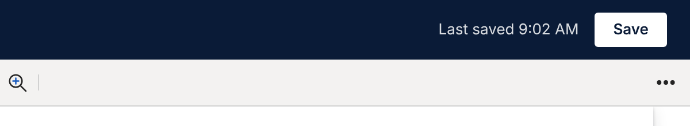
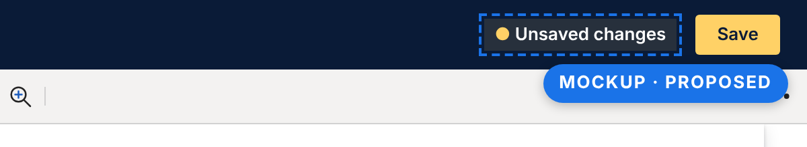
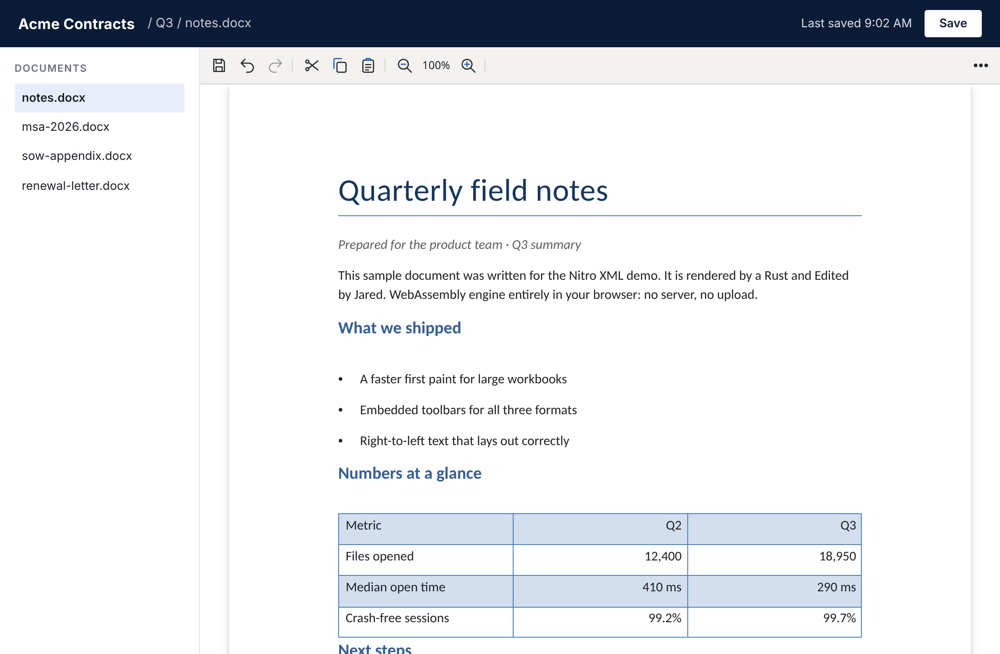
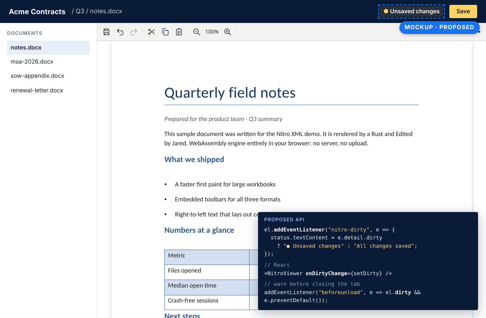

Tell host apps when a document has unsaved changes (nitro-dirty event, el.dirty, React onDirtyChange)
Approved 2026-11-17; queued in the nightly backlog.
Approve: tap 👍 on the issue · Decline: tap 👎
Close-up of the change




Full screen


Today: a host app embeds <nitro-docx> and the user has typed, but the app has no signal and still says "Last saved 9:02 AM".


Mockup: the host header flips to "Unsaved changes" from a nitro-dirty event; the same signal drives React onDirtyChange and a before-close warning.
Tap an image to open it full size.
Why
Apps that embed Nitro need to show "Unsaved changes", autosave, and warn before the tab closes, which every Office and Google editor does. Today the only unsaved-changes signal lives inside Nitro's own full ribbon; a host using the plain element or <NitroViewer> hears nothing until it calls save(), and onChange only fires on save. That tracker also works by re-saving the whole file 350 ms after each burst of typing, so an engine-side modified flag is both the missing API and a speed-up.
Definition of done
- Editable <nitro-docx>, <nitro-xlsx> and <nitro-pptx> expose a read-only dirty property and fire nitro-dirty (detail.dirty) only when it changes; save() and loading a file reset it; undo back to the saved state makes it clean again.
- React: onDirtyChange(dirty) prop and isDirty() on the ref, with TypeScript types and a README example for autosave and a before-close warning.
- Nitro's own ribbon indicator uses the same signal (the save-and-hash probe is removed); the demo's leave warning still works.
- Tests for all three formats (edit → dirty, undo → clean, save → clean) plus the consumer-smoke example; bundle-budget and all required checks green.
Approve: tap 👍 on the issue · Decline: tap 👎